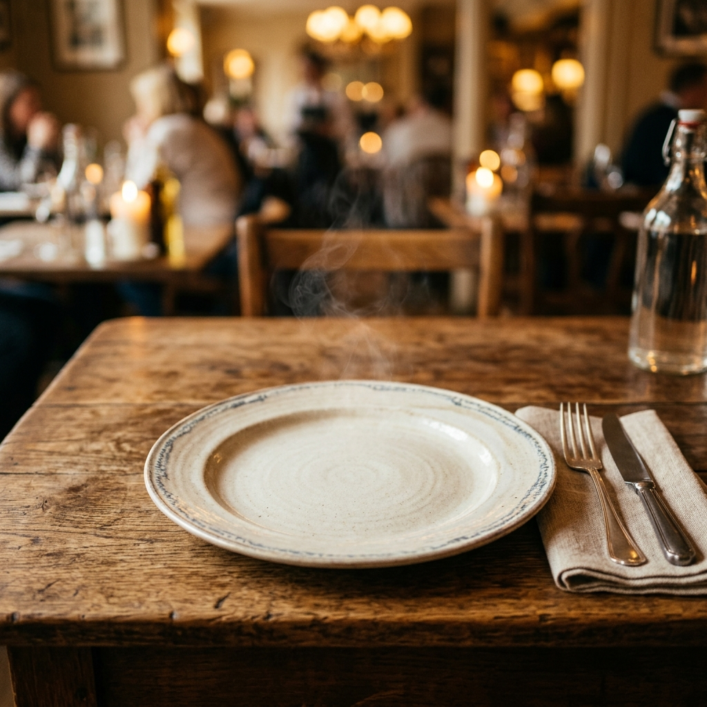

Taste the Royal Flavors
Telangana cuisine is a glorious blend of Nizam-era Mughlai richness and earthy Telugu flavors. Here are 8 iconic dishes you must try.

Hyderabadi Biryani
The world-famous dum biryani — fragrant basmati rice layered with spiced meat, slow-cooked in a sealed handi. Every grain tells a story of 400 years of culinary legacy.

Haleem
The iconic Ramadan delicacy — slow-cooked wheat, lentils, and meat blended into a rich, velvety stew. Garnished with fried onions, lemon, and fresh mint.

Sarva Pindi
A rustic dry rice flour pancake studded with peanuts, sesame seeds, and curry leaves — the quintessential Telangana breakfast that's crunchy and irresistible.
Sakinalu
Crispy spiral rice snacks made during Sankranti festival. These handcrafted, deep-fried rings are a labor of love — crunchy, aromatic, and deeply traditional.

Jonna Rotte
Traditional jowar (sorghum) flatbread — thick, hearty, and served piping hot with tangy tomato curry or spicy meat dishes. A Telangana farmer's pride.

Golichina Mamsam
Spicy dry-fried mutton tossed with curry leaves, green chilies, and aromatic Telangana spices. The name literally means "stirred meat" — and it's pure magic.

Qubani Ka Meetha
A luxurious Nizam-era dessert — dried apricots slow-cooked into a rich compote, crowned with fresh cream. The sweet legacy of Hyderabad's royal kitchens.

Double Ka Meetha
Hyderabadi bread pudding — slices of bread fried golden, soaked in saffron-infused sweet milk, and garnished with nuts. A decadent end to any Hyderabadi feast.